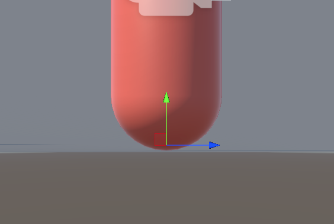

The Player¶
Setting Up¶
- Import the assets using
The Unarchiverapp on the Mac - Create a
planewith the scale of100, 100, 100 - Create a dark grey material for the
groundand add to theplane - Create a
capsuleto represent theplayerwith an orange material - Create a
cubecalledobjectwith a blue material - Duplicate, scale and rotate the
cubesin pairs to create buildings - Create a
cubeas VR googles for theplayerso we know what way they are facing - Make the
cubea child of theplayerand set the default of the googles to the z-axis (default) - Add both the
planeand thecubesas a child of to aenvironmentobject - Save the
scene
Understanding Looking Around¶
- Make the
cameraa child of theplayerso it moves with the player - Position the
cameraat eye level with theplayer - Create an empty
view pointobject and move thecameraas a child. This will allow the player to look up and down without the body also rotating! - Rotate the
playerand observe thegame camerarotating as well. Theplayerbody will be used to look left to right and theview pointwill be used to look up and down
When rotating around the
view pointyou may need to adjust theClipping Planesof the camera if you are seeing the inside of the goggles
- Create a
PlayerControllerscript and attach to theplayer
Making The Camera Move¶
- Open the
PlayerControllerscript and add the following variables:
public Transform viewPoint;
public float mouseSensitivity = 1f;
private float verticalRotStore;
private Vector2 mouseInput;
- In the
Update()method add the following code to allow mouse movement along the x axis to rotate the players view along the y axis:
void Update()
{
// Get the mouse input on the x and y axes and multiply it by a sensitivity value
mouseInput = new Vector2(
Input.GetAxisRaw("Mouse X"),
Input.GetAxisRaw("Mouse Y")) * mouseSensitivity;
// Set the rotation of the object to a new quaternion that has the same x and z angles as before,
// but has the y angle increased by the mouse input on the x axis.
transform.rotation = Quaternion.Euler(
transform.rotation.eulerAngles.x,
transform.rotation.eulerAngles.y + mouseInput.x,
transform.rotation.eulerAngles.z);
}
Looking Up & Down¶
- Add the following code in
Update()to allow the player to look up and down while clamping the viewing angle to 60 degrees:
void Update()
{
// ...
// Accumulate the vertical rotation based on the user's mouse input.
verticalRotStore += mouseInput.y;
// Clamp the vertical rotation between -60 and 60 degrees to prevent the camera from rotating too far up or down.
verticalRotStore = Mathf.Clamp(verticalRotStore, -60f, 60f);
// Set the rotation of the camera to a new quaternion that has the x angle set to the vertical rotation value, which rotates the camera up and down.
// The y and z angles are set to the current y and z angles of the camera to preserve the horizontal orientation.
viewPoint.rotation = Quaternion.Euler(
verticalRotStore,
viewPoint.rotation.eulerAngles.y,
viewPoint.rotation.eulerAngles.z);
}
Inverting & Hiding The Mouse¶
- Add a
public bool invertLookvariable - Change
verticalRotStorebased on this boolean value
- verticalRotStore += mouseInput.y;
+ verticalRotStore = invertLook ? verticalRotStore - mouseInput.y : verticalRotStore + mouseInput.y;
- Hide the mouse by updating the
Start()method with the following:
void Start()
{
// CursorLockMode.Locked value sets the lock state of the cursor to locked,
// which hides the cursor and locks it to the center of the game window.
Cursor.lockState = CursorLockMode.Locked;
}
Making the Player Move¶
- Add the following to the
PlayerControllerscript:
public float moveSpeed = 5f;
private Vector3 moveDir, movement;
void Update()
{
//..
// Get the horizontal and vertical input axes and create a new direction vector from them.
moveDir = new Vector3(Input.GetAxisRaw("Horizontal"), 0f, Input.GetAxisRaw("Vertical"));
// Create a new movement vector from the direction vector and the object's forward and right vectors.
// Normalize the result to ensure that the movement vector has a magnitude of 1.
movement = ((transform.forward * moveDir.z) + (transform.right * moveDir.x)).normalized;
// Move the object in the direction of the movement vector, scaled by the movement speed and the delta time.
transform.position += movement * moveSpeed * Time.deltaTime;
}
Interacting With The World¶
- Remove the
Capsule Collidercomponent on theplayerand add aCharacter Controllerinstead - Create a reference to the
CharacterControllerin thePlayerControllerscript:
public CharacterController characterController;
- Change the following code in the
Update()method:
- transform.position += movement * moveSpeed * Time.deltaTime;
+ characterController.Move(movement * moveSpeed * Time.deltaTime);
- Add a
cubeand rotate it to create a slope. May need to change theslope limiton theCharacterControllerif you find you can't go up the slope!
Moving At Different Speeds¶
- To allow the player to run when
left shiftkey is being held, we add the following to thePlayerControllerscript:
public float runSpeed = 8f;
private float activeMoveSpeed;
void Update()
{
activeMoveSpeed = Input.GetKey(KeyCode.LeftShift) ? runSpeed : moveSpeed;
- movement = ((transform.forward * moveDir.z) + (transform.right * moveDir.x)).normalized;
+ movement = ((transform.forward * moveDir.z) + (transform.right * moveDir.x)).normalized * activeMoveSpeed;
- characterController.Move(movement * moveSpeed * Time.deltaTime);
+ characterController.Move(movement * Time.deltaTime);
}
Setting Camera Position¶
- Remove the
camerafrom theplayerso that it doesn't disappear if the player dies - To achieve this, add the following to the
PlayerControllerscript:
private Camera playerCamera;
void Start() {
// ..
playerCamera = Camera.main;
}
// Happen after Update()
void LateUpdate() {
playerCamera.transform.position = viewPoint.position;
playerCamera.transform.rotation = viewPoint.rotation;
}
Adding Gravity¶
- Add the following to the
PlayerControllerscript:
void Update() {
// ..
// Temporary value for storing the previous movement.y value
float yVelocity = movement.y;
movement = ((transform.forward * moveDir.z) + (transform.right * moveDir.x)).normalized * activeMoveSpeed;
movement.y = yVelocity;
// Reset the yVelocity if we are grounded
if (characterController.isGrounded) movement.y = 0f;
// Take into account gravity
movement.y += Physics.gravity.y * Time.deltaTime;
}
Jumping¶
- To enable the
playerto jump, add the following to thePlayerControllerscript:
public float jumpForce = 12f;
public float gravityModifier = 2.5f;
void Update() {
// ..
if (Input.GetButtonDown("Jump")) {
movement.y = jumpForce;
}
- movement.y += Physics.gravity.y * Time.deltaTime;
+ movement.y += Physics.gravity.y * Time.deltaTime * gravityModifier;
}
Staying Grounded¶
- To ensure the
playeronly jumps when they are grounded, add the following to thePlayerControllerscript:
public Transform groundCheckpoint;
private bool isGrounded;
public LayerMask groundLayers;
- Create empty object under
playercalledGround Check Pointand set theyto-0.95

- Attach the
Ground Check Pointto thePlayerControllerscript - Add a new layer
GroundunderEnvironmentobject and apply it to all the child objects as well - Set
groundLayersreference in thePlayerControllerscript toGroundlayer
// Check if the player is grounded by using a Raycast to project a ray against the ground layers
isGrounded = Physics.Raycast(groundCheckpoint.position, Vector3.down, 0.25f, groundLayers);
// Jumping
- if (Input.GetButtonDown("Jump")) movement.y = jumpForce;
+ if (Input.GetButtonDown("Jump") && isGrounded) movement.y = jumpForce;
Building The Game To Test¶
- Go to
File -> Build Settings - Click
Add Open Scenesand selectMovement Testing - To allow it to build quickly set
ResolutiontoWindowedand854 x 480 - Create a
Buildsfolder and build the game - When you play the game you will notice we can't free our mouse!
Freeing The Mouse¶
- To free the mouse, add the following at the end of the
Update()method:
// Handle the mouse in windowed mode
if (Input.GetKeyDown(KeyCode.Escape)) Cursor.lockState = CursorLockMode.None;
else if (Cursor.lockState == CursorLockMode.None
&& Input.GetMouseButtonDown(0)) Cursor.lockState = CursorLockMode.Locked;
Code Listing¶
PlayerController.cs¶
using System.Collections;
using System.Collections.Generic;
using UnityEngine;
public class PlayerController : MonoBehaviour
{
public Transform viewPoint;
public float mouseSensitivity = 1f;
private float verticalRotStore;
private Vector2 mouseInput;
public bool invertLook;
public float moveSpeed = 5f;
public float runSpeed = 8f;
private float activeMoveSpeed;
private Vector3 moveDir, movement;
public CharacterController characterController;
private Camera playerCamera;
public float jumpForce = 12f;
public float gravityModifier = 2.5f;
public Transform groundCheckpoint;
private bool isGrounded;
public LayerMask groundLayers;
// Start is called before the first frame update
void Start()
{
// CursorLockMode.Locked value sets the lock state of the cursor to locked,
// which hides the cursor and locks it to the center of the game window.
Cursor.lockState = CursorLockMode.Locked;
playerCamera = Camera.main;
}
// Update is called once per frame
void Update()
{
// Get the mouse input on the x and y axes and multiply it by a sensitivity value
mouseInput = new Vector2(
Input.GetAxisRaw("Mouse X"),
Input.GetAxisRaw("Mouse Y")) * mouseSensitivity;
// Set the rotation of the object to a new quaternion that has the same x and z angles as before,
// but has the y angle increased by the mouse input on the x axis.
transform.rotation = Quaternion.Euler(
transform.rotation.eulerAngles.x,
transform.rotation.eulerAngles.y + mouseInput.x,
transform.rotation.eulerAngles.z);
verticalRotStore = invertLook ? verticalRotStore - mouseInput.y : verticalRotStore + mouseInput.y;
verticalRotStore = Mathf.Clamp(verticalRotStore, -60f, 60f);
viewPoint.rotation = Quaternion.Euler(
verticalRotStore,
viewPoint.rotation.eulerAngles.y,
viewPoint.rotation.eulerAngles.z);
moveDir = new Vector3(Input.GetAxisRaw("Horizontal"), 0f, Input.GetAxisRaw("Vertical"));
activeMoveSpeed = Input.GetKey(KeyCode.LeftShift) ? runSpeed : moveSpeed;
float yVelocity = movement.y;
movement = ((transform.forward * moveDir.z) + (transform.right * moveDir.x)).normalized * activeMoveSpeed;
movement.y = yVelocity;
// Reset the yVelocity if we are grounded
if (characterController.isGrounded) movement.y = 0f;
// Check if the player is grounded by using a Raycast
isGrounded = Physics.Raycast(groundCheckpoint.position, Vector3.down, 0.25f, groundLayers);
// Jumping
if (Input.GetButtonDown("Jump") && isGrounded) movement.y = jumpForce;
// Take into account gravity
movement.y += Physics.gravity.y * Time.deltaTime * gravityModifier;
characterController.Move(movement * Time.deltaTime);
// Handle the mouse in windowed mode
if (Input.GetKeyDown(KeyCode.Escape)) Cursor.lockState = CursorLockMode.None;
else if (Cursor.lockState == CursorLockMode.None
&& Input.GetMouseButtonDown(0)) Cursor.lockState = CursorLockMode.Locked;
}
void LateUpdate()
{
playerCamera.transform.position = viewPoint.position;
playerCamera.transform.rotation = viewPoint.rotation;
}
}